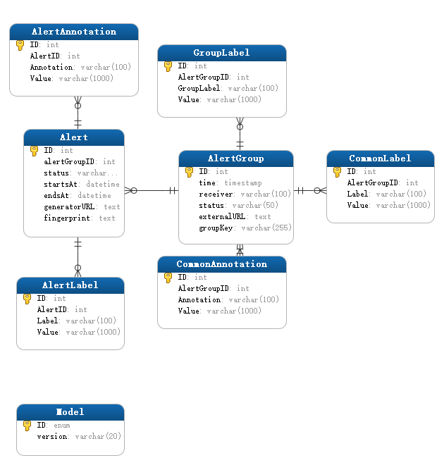

Prometheus
时序数据库，用来存储和查询监控指标。
Grafana
数据可视化。可以将Prometheus等数据源的数据进行可视化。
Alertmanager
Prometheus的警报分为两个部分。Prometheus服务器中的警报规则将警报发送到Alertmanager。该Alertmanager 然后管理这些警报，包括沉默，抑制，聚集和通过的方法，如电子邮件发出通知，Webhook，以及即时通讯平台。
Prometheus-webhook-dingtalk
集成钉钉，将告警信息推送到钉钉。
Alertsnitch
集成Mysql或者Postgres，将告警信息存储到数据库。
注意：prom-alert-webhook，sub-system-a，sub-system-b这三个应用是另外一个项目metrics-demo的子模块，作为测试用。每个子模块通过路径/actuator/prometheus获取metrics。
| IP | 说明 |
|---|---|
| 192.168.33.1 | - |
| 192.168.33.4 | - |
| 服务/应用 | IP | 端口 | 类型 | Metrics Path | 说明 |
|---|---|---|---|---|---|
| Prometheus | 192.168.33.4 | 9090 | 服务 | /metrics |
- |
| Grafana | 192.168.33.4 | 3000 | 服务 | /metrics |
- |
| Alertmanager | 192.168.33.4 | 9093 | 服务 | /metrics |
- |
| prometheus-webhook-dingtalk | 192.168.33.4 | 8060 | 服务 | 无 | - |
| alertsnitch | 192.168.33.4 | 9567 | 服务 | /metrics |
- |
| prom-alert-webhook | 192.168.33.1 | 8084 | 应用 | /actuator/prometheus |
- |
| sub-system-a | 192.168.33.1 | 8081 | 应用 | /actuator/prometheus |
- |
| sub-system-b | 192.168.33.1 | 8082 | 应用 | /actuator/prometheus |
- |
文件目录(prometheus_alert)如下：
1 | ├── alertsnitch |
首先拉取镜像：
1 | docker pull prom/prometheus:v2.26.0 && \ |
进入文件目录(prometheus_alert)的根下：
cd prometheus_alert
下面操作都是在prometheus_alert目录下进行
配置说明
检查prometheus.yml格式是否正确
1 | docker run --rm -it --entrypoint='' -v "$PWD/prometheus_conf:/etc/prometheus_conf" prom/prometheus:v2.26.0 promtool check config /etc/prometheus_conf/prometheus.yml |
prometheus.yml
1 | # 全局配置 |
检查rules.yml格式是否正确
1 | docker run --rm -it --entrypoint='' -v "$PWD/prometheus_conf:/etc/prometheus_conf" prom/prometheus:v2.26.0 promtool check rules /etc/prometheus_conf/instance.alerts.yml |
instance.alerts.yml
1 | # This is the rules file. |
测试告警规则
1 | docker run --rm -it --entrypoint='' -v "$PWD/prometheus_conf:/etc/prometheus_conf" prom/prometheus:v2.26.0 promtool test rules /etc/prometheus_conf/test.yml |
test.yml rules测试
1 | # This is the main input for unit testing. |
检查alertmanager配置文件
1 | docker run --rm -it --entrypoint='' -v "$PWD/alertmanager_conf:/etc/alertmanager_conf" prom/alertmanager:v0.21.0 amtool check-config /etc/alertmanager_conf/alertmanager.yml |
alertmanager.yml
1 | global: |
config.yml
1 | ## Request timeout |
表模型

mysql-init.sql
1 | DROP PROCEDURE IF EXISTS bootstrap; |
docker-compose.yml
1 | version: "3" |
可以在自己项目中暴露业务指标，然后Prometheus抓取指标存储到TSDB（Time series database）；
然后通过grafana定制自己的监控面板，还可以定制自己的业务告警规则，也可以在项目中通过HTTP API查询Prometheus数据作展示；
依赖
pom.xml （版本自己选择）
1 | <!-- Spring boot actuator to expose metrics endpoint --> |
application.yml
1 | management: |
自定义业务指标
| 类型 | 说明 |
|---|---|
| Counter | - |
| Gauge | - |
| Histogram | - |
| Summary | - |
test metrics
1 | import io.micrometer.core.instrument.Counter; |